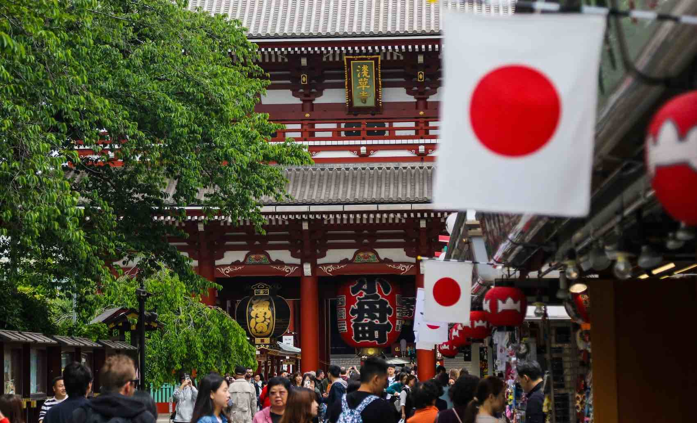

Un poco de Japón
Japón es una nación del océano Pacifico con densas ciudades, palacios, parques y miles de santuarios y templos. La capital de Japón, Tokio es famosa por sus rascacielos, el comercio y su cultura. En japón existen muchas atracciones interesantes para los turistas que están interesados en este país asiático pero la gran mayoría tiene como primer destino la capital pues desde ahí se pueden mover a cualquier prefectura por medio del tren bala shinkansen.
